Code
# Load the library "rstanarm" to fit Bayesian linear models using the function
# stan_glm()
library(rstanarm)Load R-libraries
# Load the library "rstanarm" to fit Bayesian linear models using the function
# stan_glm()
library(rstanarm)Readings:
Bivariate regression involves a single predictor. Adding more than one predictor to the model makes it a multiple regression model. Multiple predictors may be included for at least two reasons:
Here an example of a simple multiple regression model with surprising reversal of trend compared to simple bivariate model. Data from Table 15.1 in Howell’s “Statistical Methods for Psychology” (8th ed).
The data is based on a paper by Guber (1999) regarding the relationship between state spendings on education and students performance on two standardized tests (SAT and ACT), data is from 1994-95. Data is from the 50 U.S. states (so unit of observation is state). SAT scores range from 200 to 800, the ACT range between 1 and 36. SAT has been characterized as mainly a test of ability, whereas the ACT is more of a test of material covered in school.
Code book:
Follow this link to find data Save (Ctrl+S on a PC) to download as text file
h <- read.table("./datasets/sat_howell.txt", header = TRUE, sep = ',')Research question: Estimate the causal effect of State school spendings (expend) on SAT-scores (sat)
Analyses below uses the following variables:
Boxplot of percentage (left) and log percentage (right) of students in the state taking the SAT.
par(mfrow = c(1, 2))
boxplot(h$PctSAT, main = "Per cent SAT takers", ylim = c(0, 100))
boxplot(log(h$PctSAT), main = "log(Per cent SAT takers)")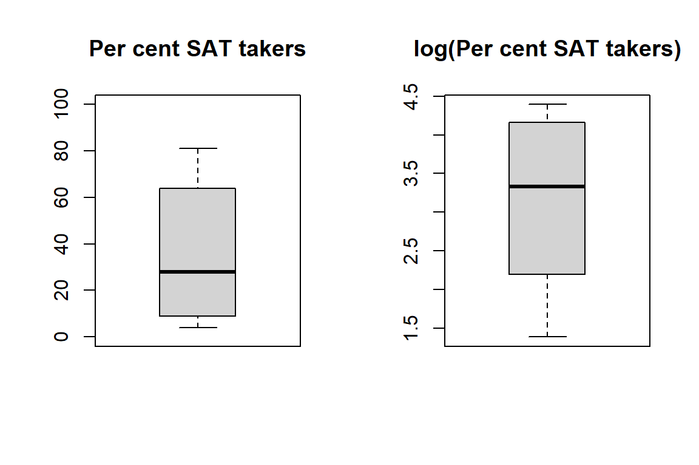
To simplify the following presentation, I put the key variables in a new data frame.
# Rename selected variables to simplify the following presentation
expend <- h$Expend
sat <- h$SAT
psat <- h$PctSAT # log-transform, log() in R is the natural log ln
psatlog <- log(h$PctSAT) # log-transform, log() in R is the natural log ln
state <- h$State
ptratio <- h$PTratio
salary <- h$Salary
# Put in new data frame called d
d <- data.frame(state, expend, psat, psatlog, ptratio, salary, sat)
str(d)'data.frame': 50 obs. of 7 variables:
$ state : chr "Alabama" "Alaska" "Arizona" "Ark" ...
$ expend : num 4.41 8.96 4.78 4.46 4.99 ...
$ psat : int 8 47 27 6 45 29 81 68 48 65 ...
$ psatlog: num 2.08 3.85 3.3 1.79 3.81 ...
$ ptratio: num 17.2 17.6 19.3 17.1 24 18.4 14.4 16.6 19.1 16.3 ...
$ salary : num 31.1 48 32.2 28.9 41.1 ...
$ sat : int 1029 934 944 1005 902 980 908 897 889 854 ...Take a look at the outcome variable SAT:
par(mfrow = c(1, 2))
# Histogram
hist(d$sat, breaks = seq(775, 1225, 50), freq = TRUE,
main = "") # Bins of 50 SAT-points
# Histogram with density overlay
hist(d$sat, breaks = seq(775, 1225, 50), freq = FALSE, main = "") # Bins of 50 SAT-points
lines(density(d$sat))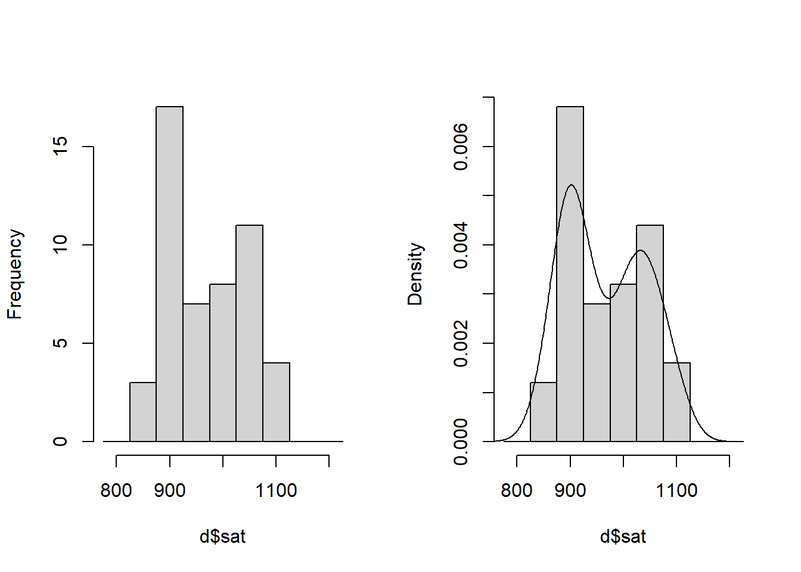
# Correlation matrix three variables of interest
round(cor(d[, 2:6]), 3) expend psat psatlog ptratio salary
expend 1.000 0.593 0.561 -0.371 0.870
psat 0.593 1.000 0.961 -0.213 0.617
psatlog 0.561 0.961 1.000 -0.132 0.613
ptratio -0.371 -0.213 -0.132 1.000 -0.001
salary 0.870 0.617 0.613 -0.001 1.000pairs(~ sat + expend + psat + psatlog, data = d)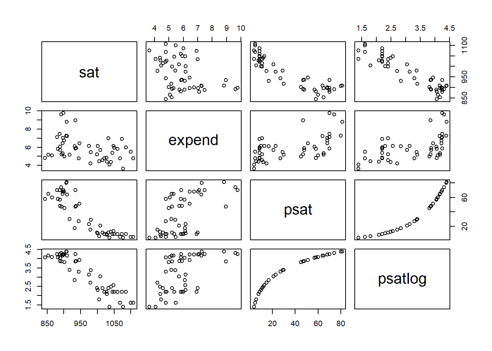
# Bivariate regression model
plot(d$expend, d$sat) # Scatter plot to inspect data
crude <- glm(sat ~ expend, data = d) # Simple (crude) regression model of SAT
summary(crude) # Look at model output
Call:
glm(formula = sat ~ expend, data = d)
Coefficients:
Estimate Std. Error t value Pr(>|t|)
(Intercept) 1089.294 44.390 24.539 < 2e-16 ***
expend -20.892 7.328 -2.851 0.00641 **
---
Signif. codes: 0 '***' 0.001 '**' 0.01 '*' 0.05 '.' 0.1 ' ' 1
(Dispersion parameter for gaussian family taken to be 4887.2)
Null deviance: 274308 on 49 degrees of freedom
Residual deviance: 234586 on 48 degrees of freedom
AIC: 570.57
Number of Fisher Scoring iterations: 2abline(crude) # Draw regression model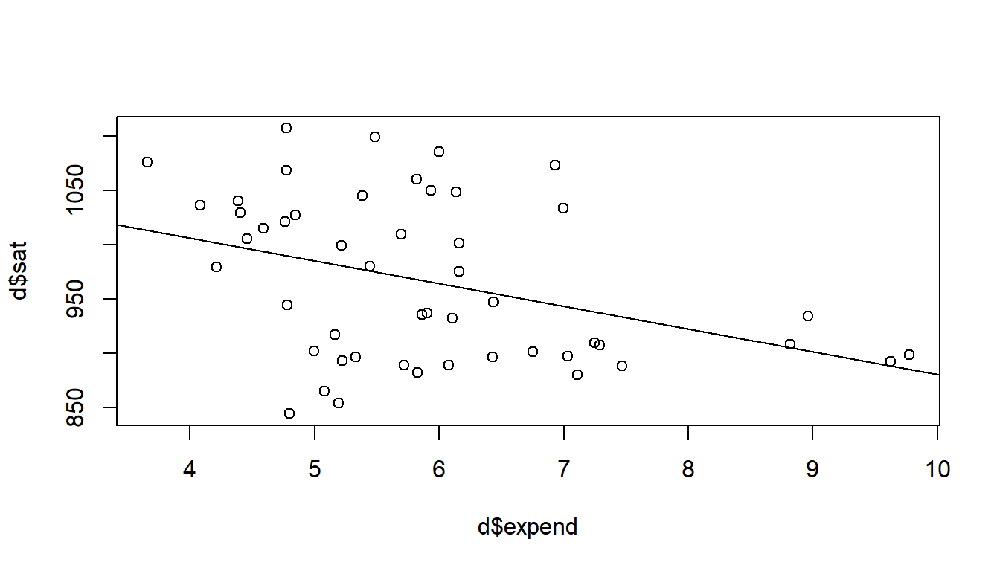
# b of expend, with 95 % confidence intervals
crude_expend <- c(crude$coefficients[2], confint(crude)[2, ])
names(crude_expend) <- c('b', 'ci95lo', 'ci95hi')
round(crude_expend, 3) b ci95lo ci95hi
-20.892 -35.255 -6.529 # Multiple regression model
adjusted = glm(sat ~ expend + psatlog, data = d) # multiple regression model
summary(adjusted)
Call:
glm(formula = sat ~ expend + psatlog, data = d)
Coefficients:
Estimate Std. Error t value Pr(>|t|)
(Intercept) 1147.113 16.700 68.69 < 2e-16 ***
expend 11.130 3.264 3.41 0.00134 **
psatlog -78.205 4.471 -17.49 < 2e-16 ***
---
Signif. codes: 0 '***' 0.001 '**' 0.01 '*' 0.05 '.' 0.1 ' ' 1
(Dispersion parameter for gaussian family taken to be 664.6464)
Null deviance: 274308 on 49 degrees of freedom
Residual deviance: 31238 on 47 degrees of freedom
AIC: 471.76
Number of Fisher Scoring iterations: 2confint(adjusted) 2.5 % 97.5 %
(Intercept) 1114.380296 1179.84488
expend 4.731932 17.52733
psatlog -86.968108 -69.44187# 95 % confidence intervals adjusted model about b of expend
adjusted_expend <- c(adjusted$coefficients[2], confint(adjusted)[2, ])
names(adjusted_expend) <- c('b', 'ci95lo', 'ci95hi')
round(adjusted_expend, 3) b ci95lo ci95hi
11.130 4.732 17.527 Scatterplot with symbol size related to percentage SAT-takers (psat). Lines from crude model (left) and from the adjusted model (right) for states with psat at the 25th (dashed line), 50th (solid line) and the 75th (dotted line) percentile respectively.
par(mfrow = c(1, 2))
plot(d$expend, d$sat, cex = d$psatlog, pch = 21, bg = rgb(0, 1, 0, 0.1),
xlab = "Expend", ylab = "SAT-score")
abline(crude, lty = 2)
# Lines for psat = Q25 and Q75
plot(d$expend, d$sat, cex = d$psatlog, pch = 21, bg = rgb(0, 1, 0, 0.1),
xlab = "Expend", ylab = "SAT-score")
xlin <- c(3, 10)
ylin25 <- adjusted$coefficients[1] +
adjusted$coefficients[2]*xlin +
adjusted$coefficients[3]*quantile(d$psatlog, prob = 0.25)
lines(xlin, ylin25, col = "blue", lty = 2 )
ylin50 <- adjusted$coefficients[1] +
adjusted$coefficients[2]*xlin +
adjusted$coefficients[3]*quantile(d$psatlog, prob = 0.5)
lines(xlin, ylin50, col = "blue", lty = 1 )
ylin75 <- adjusted$coefficients[1] +
adjusted$coefficients[2]*xlin +
adjusted$coefficients[3]*quantile(d$psatlog, prob = 0.75)
lines(xlin, ylin75, col = "blue", lty = 3 )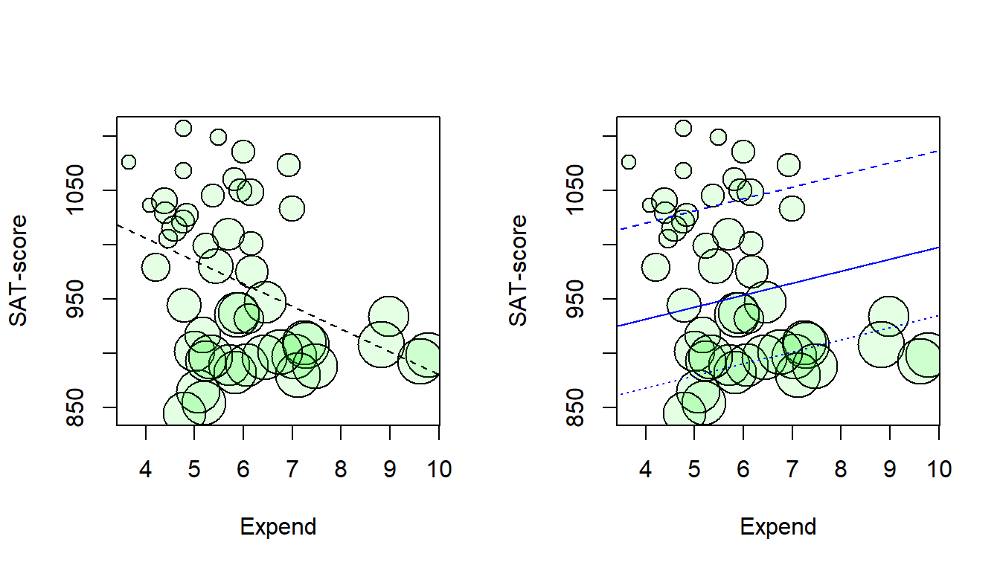
# create empty plot
plot(0, xaxt = "n", xlim = c(0.5,2.5), ylim = c(-50, 50),
pch = "", xlab = "Model",
ylab = "Linear regression coefficient (SAT / Expend)")
# Add x-axis labels
axis(1, at = c(1, 2), labels = c('Crude', 'Adjusted'))
# Add dotted line (lty = 2) at no effect: regression coefficient = 0
lines(c(-0.2,3.2), c(0,0), lty = 2)
# Add CI for crude and adjusted model
arrows(x0 = 1, x1 = 1, y0 = crude_expend[2], y1 = crude_expend[3],
angle = 90, code = 3, length = 0.1)
points(1, crude_expend[1], pch = 21, bg = "grey")
arrows(x0 = 2, x1 = 2, y0 = adjusted_expend[2], y1 = adjusted_expend[3],
angle = 90, code = 3, length = 0.1)
points(2, adjusted_expend[1], pch = 21, bg = "grey")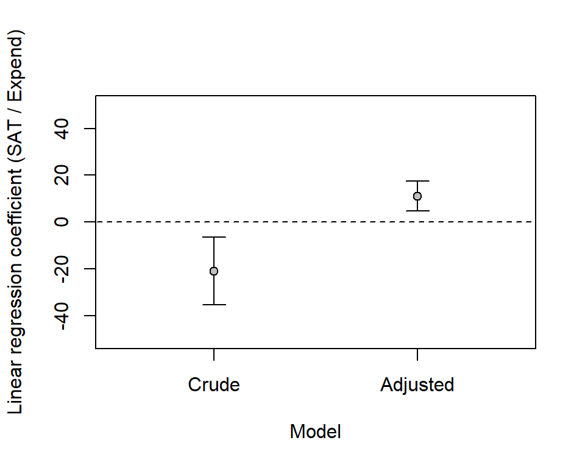
This plot shows model predictions (adjusted model) versus observed data. Note that predictions (y-axis) refer to predicted mean values for given values of the predictors.
sat_pred <- adjusted$fitted.values
plot(sat, sat_pred, xlim = c(800, 1200), ylim = c(800, 1200))
lines(c(800, 1200), c(800, 1200))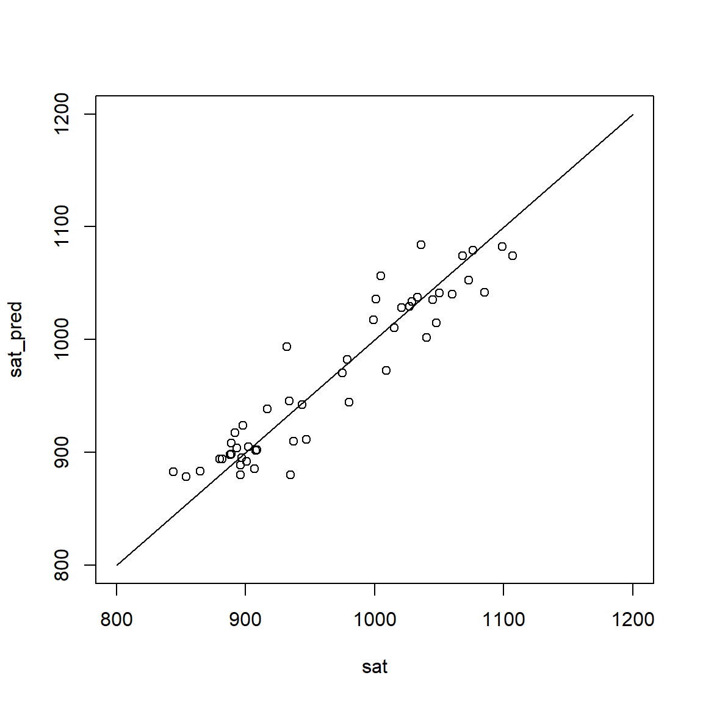
R <- cor(sat, sat_pred)
R2 <- R^2
rms_error <- sqrt(mean((sat_pred - sat)^2))
round(c(R = R, R2 = R2, rms_error = rms_error), 3) R R2 rms_error
0.941 0.886 24.995 Our regression model implies that data are normally distributed around predicted values. This means that residuals (observed value - predicted mean value) should be evenly spaced around zero. A way to check this is to plot residuals versus fitted values.
adj_fitted <- adjusted$fitted
adj_res <- adjusted$residuals
plot(adj_fitted, adj_res, xlab = "SAT score (fitted values)",
ylab = "Residuals (Adjusted model)")
abline(h = 0, lty = 2)
# Smoothing estimated, should be approx flat around y = 0
lines(lowess(adj_res ~ adj_fitted), col = "red", lty = 3) 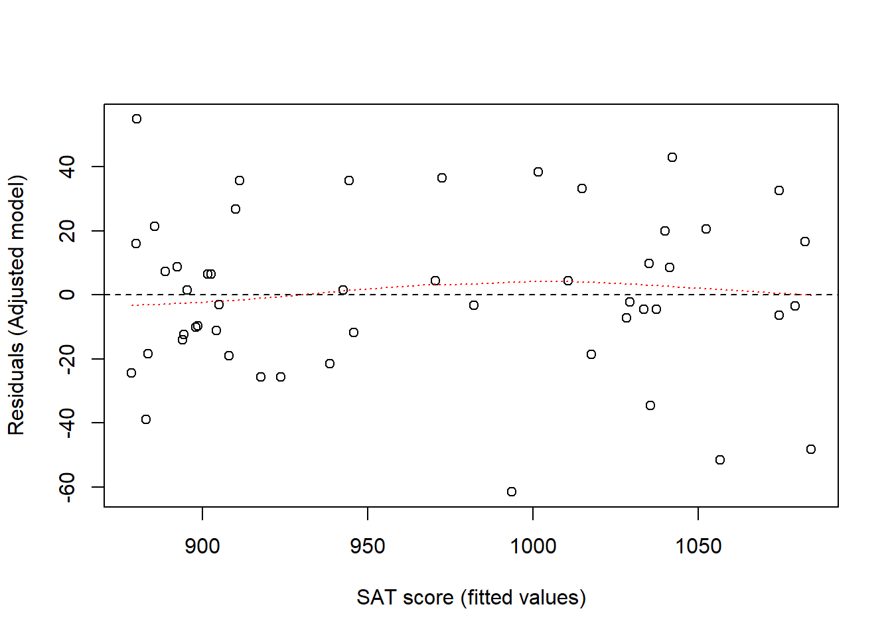
With small data sets it may be useful to check each residual. Here I just plot residuals for each state, to see for which state the model fitted best and worst.
adj_res <- adjusted$residuals
adj_res_sorted <- adj_res[order(adj_res)]
plot(adj_res_sorted, xaxt='n', xlab = '', ylab = "Residual", ylim = c(-70, 70))
lines(c(0, 51), c(0, 0), lty = 2)
state_sorted <- state[order(adj_res)]
axis(1, at = 1:length(adj_res_sorted), labels = state_sorted, las = 2, cex = 0.5)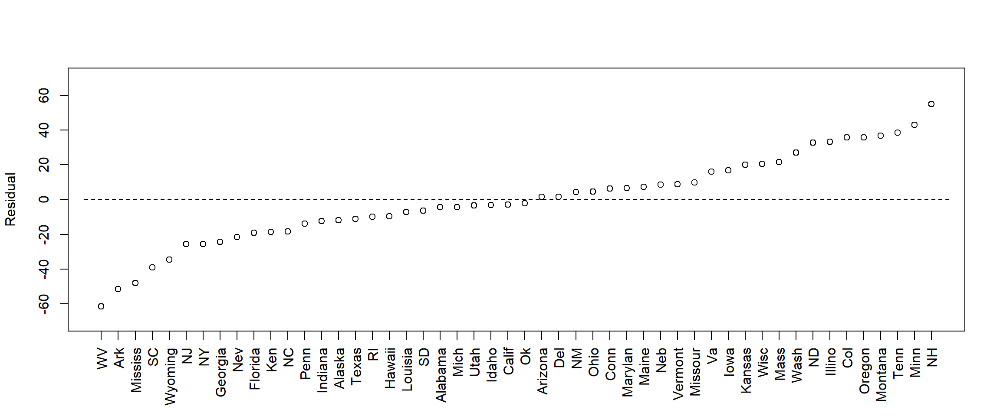
More on diagnostic plots below (section: Regression diagnostics).
Here modeling as above but with additional variables. Always keep risk of over-adjustment bias in mind! Another issue is the number of data points, the largest model below has 5 parameters for the 50 data points; this is probably OK. An old rule-of-thumb is at least 10 data points per estimated parameter (Note:
With Bayesian estimation you can have fewer, and compensate for lack of data with stricter priors.)
# Recalculating and renaming the two models from above
m1 <- glm(sat ~ expend) # Crude above
m2 <- glm(sat ~ expend + psatlog) # Adjusted above
m3 <- glm(sat ~ expend + psatlog + ptratio)
m4 <- glm(sat ~ expend + psatlog + salary)
m5 <- glm(sat ~ expend + psatlog + ptratio + salary)
m1b <- c(m1$coefficients[2], confint(m1)[2, ])
m2b <- c(m2$coefficients[2], confint(m2)[2, ])
m3b <- c(m3$coefficients[2], confint(m3)[2, ])
m4b <- c(m4$coefficients[2], confint(m4)[2, ])
m5b <- c(m5$coefficients[2], confint(m5)[2, ])
# create empty plot
plot(0, xaxt = "n", xlim = c(0.5,5.5), ylim = c(-50, 50),
pch = "", xlab = "",
ylab = "Linear regression coefficient (SAT / Expend)")
# Add x-axis labels
axis(1, at = 1:5, las = 2, cex = 0.7,
labels = c('Expend', 'Expend+\nlogpSAT', 'Expend+\nlogpSAT+\nPTratio',
'Expend+\nlogpSAT+\nSalary',
'Expend+\nlogpSAT+\nPTratio+\nSalary'))
# Add dotted line (lty = 2) at no effect: regression coefficient = 0
lines(c(-0.2,5.7), c(0,0), lty = 2)
# Add CI for models
add_ci <- function(m, xpos = 1){
arrows(x0 = xpos, x1 = xpos, y0 = m[2], y1 = m[3],
angle = 90, code = 3, length = 0.1)
points(xpos, m[1], pch = 21, bg = "grey")
}
add_ci(m1b, xpos = 1)
add_ci(m2b, xpos = 2)
add_ci(m3b, xpos = 3)
add_ci(m4b, xpos = 4)
add_ci(m5b, xpos = 5)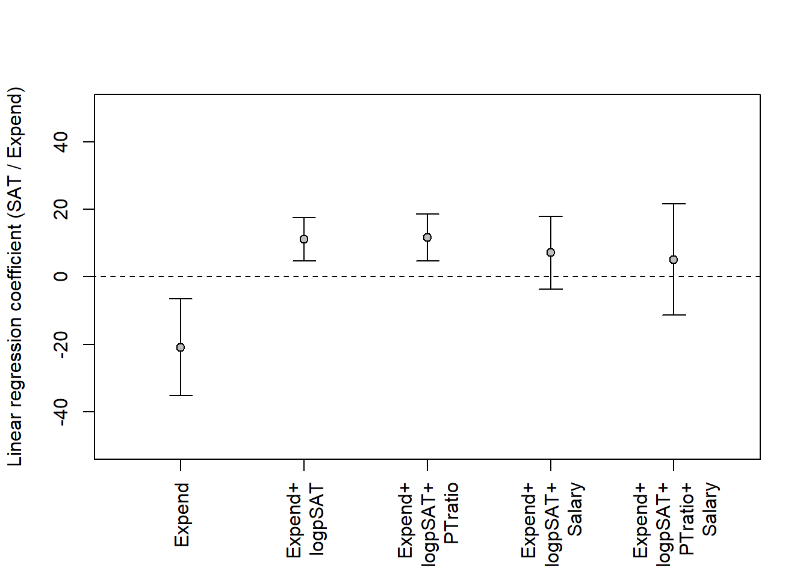
Which of these two is your model?
library(dagitty)Warning: package 'dagitty' was built under R version 4.4.3dag1 <- dagitty( "dag {
expend -> sat
sat <- pratio <- U -> expend
expend -> salary -> sat
expend -> ptratio -> sat
}")
dag2 <- dagitty( "dag {
expend -> sat
sat <- pratio <- U -> expend
expend <- salary -> sat
expend <- ptratio -> sat
}")
coordinates(dag1) <- list(
x = c(expend = 1, U = 1.5, pratio = 2.5, salary = 2.5, ptratio = 2.5, sat = 4),
y = c(expend = 3, U = 1.5, pratio = 2, salary = 1, ptratio = 2.5, sat = 3))
coordinates(dag2) <- list(
x = c(expend = 1, U = 1.5, pratio = 2.5, salary = 2.5, ptratio = 2.5, sat = 4),
y = c(expend = 3, U = 1.5, pratio = 2, salary = 1, ptratio = 2.5, sat = 3))
par(mfrow = c(1, 2))
plot(dag1)
plot(dag2)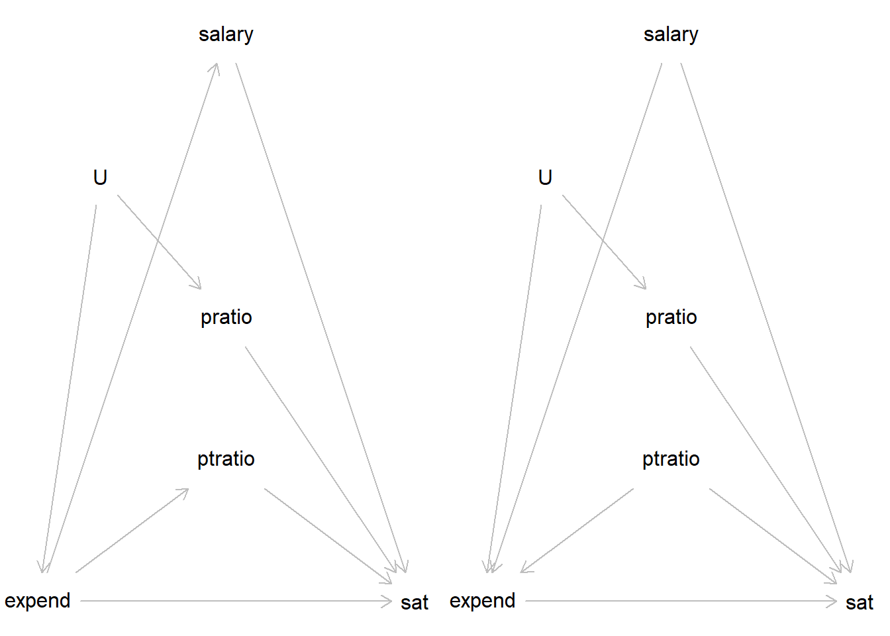
See Gelman et al. (2021), Chapter 11, Section 11.1 for an excellent review of regression assumptions. They list a number of assumptions, in order of importance. Here a brief version:
There are several ways to check your model. In the SAT-data example above, these three plots were used:
With Bayesian estimation, several other diagnostic plots are available. Bayesian models are data-generative, that is, they can be used to generate simulated data in accordance with your model. Comparing these simulated data (your model implications) with your actual outcome data is a fundamental way to check your. A good model should generate data that looks a lot like the data you observed (the data it was supposed to model). Such plots may guide you to aspects of the model that seem inconsistent with your model.
We have already discussed one such plot above (3. Predicted against observed data), but that one was limited to point-estimates of predicted means. A more advanced plot will simulate new data, taking into account uncertainty in predicted means (\(\mu_i\)) and uncertainty in the predicted variation around means (\(\sigma\)). See, Gelman et al., Section 11.4 for a simple illustration.
Below I illustrate using models of the SAT-data discussed above. To do this, I need first to fit the models in stan_glm() from the rstanarm packages.
# Crude model
m1 <- stan_glm(sat ~ expend, data = d, refresh = 0)
print(m1)stan_glm
family: gaussian [identity]
formula: sat ~ expend
observations: 50
predictors: 2
------
Median MAD_SD
(Intercept) 1088.9 44.1
expend -20.8 7.3
Auxiliary parameter(s):
Median MAD_SD
sigma 70.5 7.2
------
* For help interpreting the printed output see ?print.stanreg
* For info on the priors used see ?prior_summary.stanreg# Adjusting for psat
m2 <- stan_glm(sat ~ expend + psatlog, data = d, refresh = 0)
print(m2)stan_glm
family: gaussian [identity]
formula: sat ~ expend + psatlog
observations: 50
predictors: 3
------
Median MAD_SD
(Intercept) 1147.1 16.3
expend 11.1 3.3
psatlog -78.1 4.7
Auxiliary parameter(s):
Median MAD_SD
sigma 26.1 2.6
------
* For help interpreting the printed output see ?print.stanreg
* For info on the priors used see ?prior_summary.stanregI then extract samples from the posterior distribution of model parameters.
# Extract samples, you may also use as.matrix() as Gelman et al (e.g., p. 163)
# Crude model
ss1 <- as.data.frame(m1)
head(ss1) (Intercept) expend sigma
1 1115.356 -27.21964 57.91113
2 1052.209 -13.09154 83.51162
3 1137.713 -30.30710 62.34097
4 1116.702 -23.27341 71.25001
5 1133.792 -26.80801 79.69628
6 1051.870 -15.75319 57.69220# Adjusted model
ss2 <- as.data.frame(m2)
head(ss2) (Intercept) expend psatlog sigma
1 1125.964 16.346956 -82.72654 27.01791
2 1159.490 8.475829 -75.83672 23.89718
3 1127.625 12.157837 -74.88251 27.75706
4 1133.542 13.470384 -78.22500 28.97512
5 1146.142 16.611083 -87.31651 27.44121
6 1146.331 7.548495 -73.11641 25.40585Then I create simulated data sets, one for each row of the data frame with sampled parameter values. Each row is one plausible model.
ndraws <- nrow(ss1)
n <- length(d$sat)
# Model m1
yrep1 <- array(NA, dim = c(ndraws, n))
x <- d$expend
for (j in 1:ndraws){
yrep1[j, ] <- rnorm(n,
mean = ss1$`(Intercept)` + ss1$expend*x,
sd = ss1$sigma)
}
# Model m2
yrep2 <- array(NA, dim = c(ndraws, n))
x1 <- d$expend
x2 <- d$psatlog
for (j in 1:ndraws){
yrep2[j, ] <- rnorm(n,
mean = ss2$`(Intercept)` + ss2$expend*x1 + ss2$psatlog*x2,
sd = ss2$sigma)
}
# Look at yrep arrays
str(yrep1) num [1:4000, 1:50] 997 932 1055 1134 1045 ...str(yrep2) num [1:4000, 1:50] 1053 1004 1034 1056 1055 ...The objects yrep1 and yrep2 contain 4000 simulated data sets, each with 50 observations (because our data set contained 50 observations)
Finally, I may plot observed data (y) and simulations (yrep), e.g., using kernel density plots as below.
set.seed(123)
par(mfrow = c(1, 2))
# Model 1: Crude
plot(density(d$sat), xlim = c(700, 1300),
ylim = c(0, 0.008), main = "Crude model", xlab = "SAT score")
for (j in sample(1:ndraws, 30)) {
lines(density(yrep1[j, ]), col = rgb(1, 0, 0, 0.2))
}
# Model 2: Adjusted
plot(density(d$sat), xlim = c(700, 1300),
ylim = c(0, 0.008), main = "Adjusted model", xlab = "SAT score")
for (j in sample(1:ndraws, 30)) {
lines(density(yrep2[j, ]), col = rgb(1, 0, 0, 0.2))
}
# Legend
lines(c(1100, 1150), c(0.008, 0.008))
lines(c(1100, 1150), c(0.0075, 0.0075), col = "red")
text(1160, 0.008, labels = "y", pos = 4, cex = 0.7)
text(1160, 0.0075, labels = "yrep", pos = 4, cex = 0.7)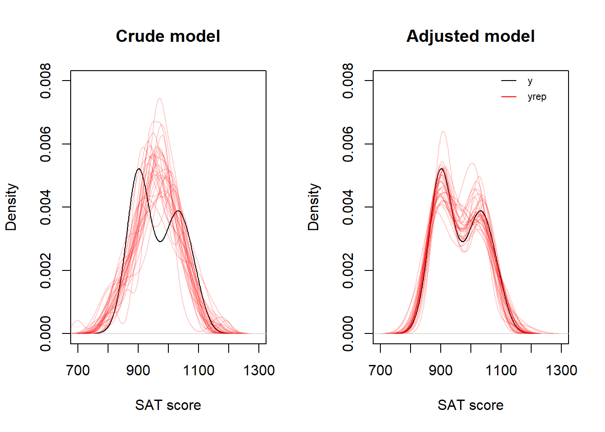
A faster way to simualte data sets (yrep) is to use the poster_predict() function in rstanarm. Here a plot of distribution of IQRs over 4000 sets of yrep (black line), compared to the IQR of the observed data, y (blue line).
yrep1 <- posterior_predict(m1)
yrep2 <- posterior_predict(m2)
par(mfrow = c(1, 2))
iqr1 <- apply(yrep1, 1, IQR)
plot(density(iqr1), main = "Crude model IQR", xlim = c(20, 200), xlab = "IQR")
abline(v = IQR(d$sat), col = "blue")
iqr2 <- apply(yrep2, 1, IQR)
plot(density(iqr2), main = "Adjusted model IQR", xlim = c(20, 200), xlab = "IQR")
abline(v = IQR(d$sat), col = "blue")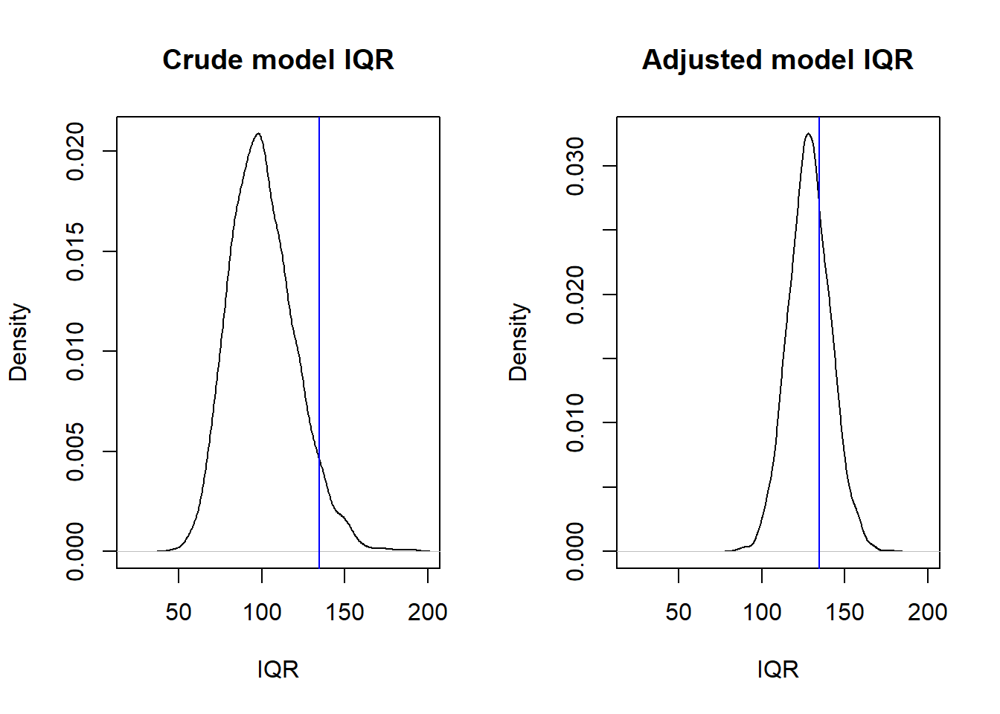
Models are often evaluated based on how well they fit data. For linear models, common measures of fit are derived from residuals. A residual, \(r_i\), is defined as
\(r_i = y_i - \hat{y_i}\), where \(\hat{y_i}\) is the model’s prediction for an observation \(y_i\).
When the model is evaluated using the same data on which it was fitted (or “trained”), this may be referred to as internal or in-sample model evaluation. In this approach, the observed data is used twice—first to fit the model and then to assess its performance based on residuals. Two common measures for in-sample fit are the residual standard deviation (\(\hat{\sigma}\)) and the proportion of explained variance, \(R^2\).
One key limitation of in-sample fit is the risk of overfitting, where the model captures random patterns specific to a particular data set. As a result, an overfitted model may perform poorly when applied to new, unseen data that lacks those specific random errors.
When the model is evaluated using a new data set, this may be referred to as external or out-of-sample model evaluation. A general term for this is cross-validation as briefly discussed below.
The residual standard deviation, \(\hat{\sigma}\), is an estimate of the \(\sigma\) of the general linear model (see these notes, Section 8.4). \(\sigma\) is the dispersion of values around the population mean associated with specific values of the predictors. We may use \(\hat{\sigma}\) as a measure of the unexplained variation in the data.
The amount of variance “explained” by the model, \(R^2\). This is a standardized measure that relates \(\hat{\sigma}^2\) to the sample variance of the outcome, \(s^2_y\): \(R^2 = 1 - (\hat{\sigma}^2/s^2_y)\). If equal, then \(R^2 = 0\), if \(\hat{\sigma}^2 = 0\), all data points fall on the regression line, then \(R^2 = 1\).
For more on this, see Gelman et al. (2021), section 11.6.
Not covered in this course, but important, so the ambitious student should consult Gelman et al. (2021), section 11.7-11.8.
Appendix B of Gelman et al. (2021) give 10 tips to improve your regression modeling. Excellent suggestions, read carefully! And remember where you read it, so you can revisit as your modelling skills guest more advanced and your models more complex. Here is a short version of my interpretation of their tips:
The practice problems are labeled Easy (E), Medium (M), and Hard (H), (as in McElreath (2020)).
12E1. In a linear regression model predicting weight [kg] as a function of age [y], the age variable used in the linear regression model was transformed to:
\(age_{transformed} = 10(age - 40)\)
Why? (two reasons)
12E2. Centering of a predictor in a multiple regression model will change the intercept of the model. What happens to the regression coefficients (slopes)?
12M1. Go back to the kidiq data discussed in chapter 10 of these notes. Do diagnostic plots. Specifically:
Comment on what you see.
12H1. Go back to the model in 12M1. Plot kernel densities for observed kidiq (y) overlaid with densities for simulated data sets (yrep). Do for the whole data set, and separately for mom_hs = 0 and mom_hs = 1.
Use the function posterior_predict() to generate simulated data (yrep). Compare your plot with the corresponding plot generate using the function pp_check()
12H2. Redo the density plot from 12H1, but now from scratch. That is, don’t use posterior_predict() to generate samples, do it “by hand” from extracted samples (as.data.frame(modelfit) or as.matrix(modelfit)). Se example above, and in Gelman et al (p. 163)
sessionInfo()R version 4.4.2 (2024-10-31 ucrt)
Platform: x86_64-w64-mingw32/x64
Running under: Windows 11 x64 (build 26100)
Matrix products: default
locale:
[1] LC_COLLATE=Swedish_Sweden.utf8 LC_CTYPE=Swedish_Sweden.utf8
[3] LC_MONETARY=Swedish_Sweden.utf8 LC_NUMERIC=C
[5] LC_TIME=Swedish_Sweden.utf8
time zone: Europe/Stockholm
tzcode source: internal
attached base packages:
[1] stats graphics grDevices utils datasets methods base
other attached packages:
[1] dagitty_0.3-4 rstanarm_2.32.1 Rcpp_1.0.14
loaded via a namespace (and not attached):
[1] tidyselect_1.2.1 dplyr_1.1.4 farver_2.1.2
[4] loo_2.8.0 fastmap_1.2.0 tensorA_0.36.2.1
[7] shinystan_2.6.0 promises_1.3.3 shinyjs_2.1.0
[10] digest_0.6.37 mime_0.13 lifecycle_1.0.4
[13] StanHeaders_2.32.10 survival_3.7-0 magrittr_2.0.3
[16] posterior_1.6.1 compiler_4.4.2 rlang_1.1.6
[19] tools_4.4.2 igraph_2.1.4 yaml_2.3.10
[22] knitr_1.50 htmlwidgets_1.6.4 pkgbuild_1.4.8
[25] curl_6.4.0 plyr_1.8.9 RColorBrewer_1.1-3
[28] dygraphs_1.1.1.6 abind_1.4-8 miniUI_0.1.2
[31] grid_4.4.2 stats4_4.4.2 xts_0.14.1
[34] xtable_1.8-4 inline_0.3.21 ggplot2_3.5.2
[37] scales_1.4.0 gtools_3.9.5 MASS_7.3-61
[40] cli_3.6.5 rmarkdown_2.29 reformulas_0.4.1
[43] generics_0.1.4 RcppParallel_5.1.10 rstudioapi_0.17.1
[46] reshape2_1.4.4 minqa_1.2.8 rstan_2.32.7
[49] stringr_1.5.1 shinythemes_1.2.0 splines_4.4.2
[52] bayesplot_1.13.0 parallel_4.4.2 matrixStats_1.5.0
[55] base64enc_0.1-3 vctrs_0.6.5 V8_6.0.4
[58] boot_1.3-31 Matrix_1.7-1 jsonlite_2.0.0
[61] crosstalk_1.2.1 glue_1.8.0 nloptr_2.2.1
[64] codetools_0.2-20 distributional_0.5.0 DT_0.33
[67] stringi_1.8.7 gtable_0.3.6 later_1.4.2
[70] QuickJSR_1.8.0 lme4_1.1-37 tibble_3.3.0
[73] colourpicker_1.3.0 pillar_1.10.2 htmltools_0.5.8.1
[76] R6_2.6.1 Rdpack_2.6.4 evaluate_1.0.3
[79] shiny_1.11.1 lattice_0.22-6 markdown_2.0
[82] rbibutils_2.3 backports_1.5.0 threejs_0.3.4
[85] httpuv_1.6.16 rstantools_2.4.0 gridExtra_2.3
[88] nlme_3.1-166 checkmate_2.3.2 xfun_0.52
[91] zoo_1.8-14 pkgconfig_2.0.3